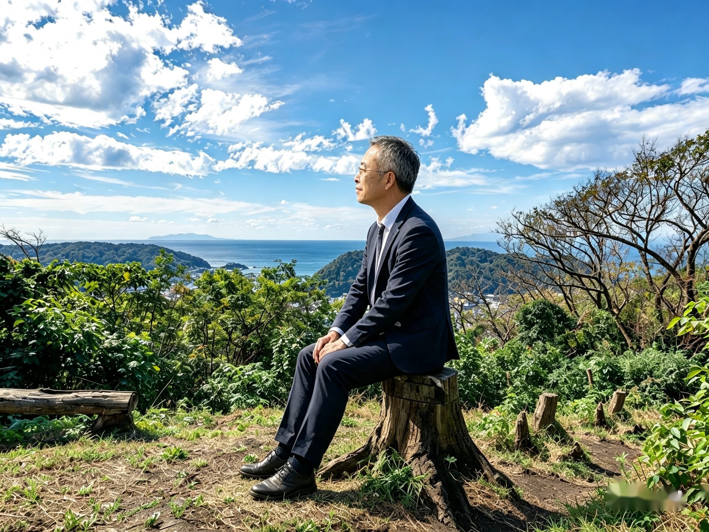

人がつながる。自然が息づく。
そんな葉山を、次の世代へ。
暮らし、自然、ひと。
このまちの良さを未来へつなぐために。
今できることから。

このまちで
ずっと、これからも。
1980年から葉山に暮らし、航空会社で30年以上勤務してきました。
テニスや海のスポーツに関心を持ち、80歳になってもテニスで日本一を目指すことが夢です。
海と山、富士山の景色、地域のお店や人の力をつなぎ、葉山を楽しむことが、
町を支えることにつながる仕組みを考えています。
「60にして立つ」。
皆さんの声に耳を傾けながら、人生の最期まで安心して暮らせる町を、ともに考えていきます。
曲田 和史 KAZUFUMI KYOKUTA